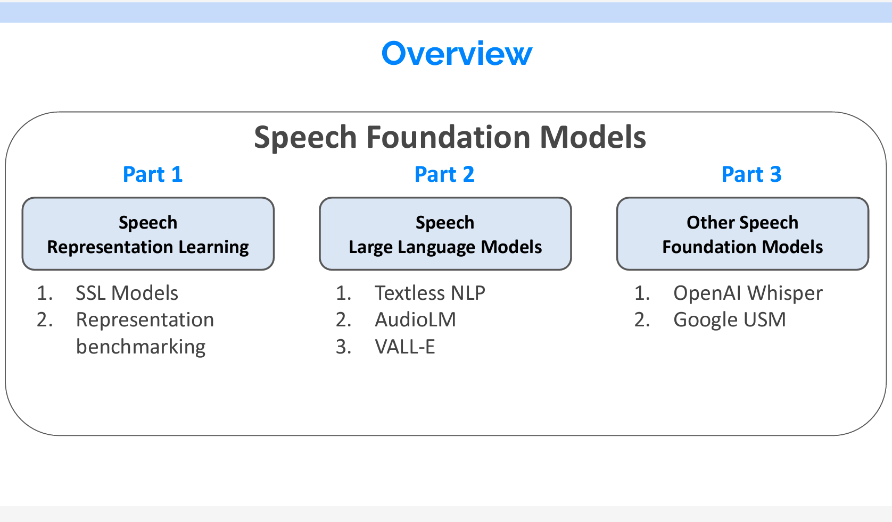
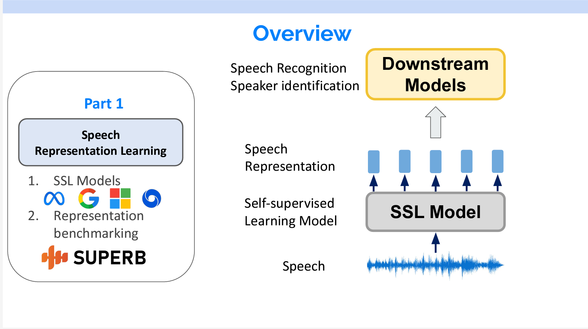
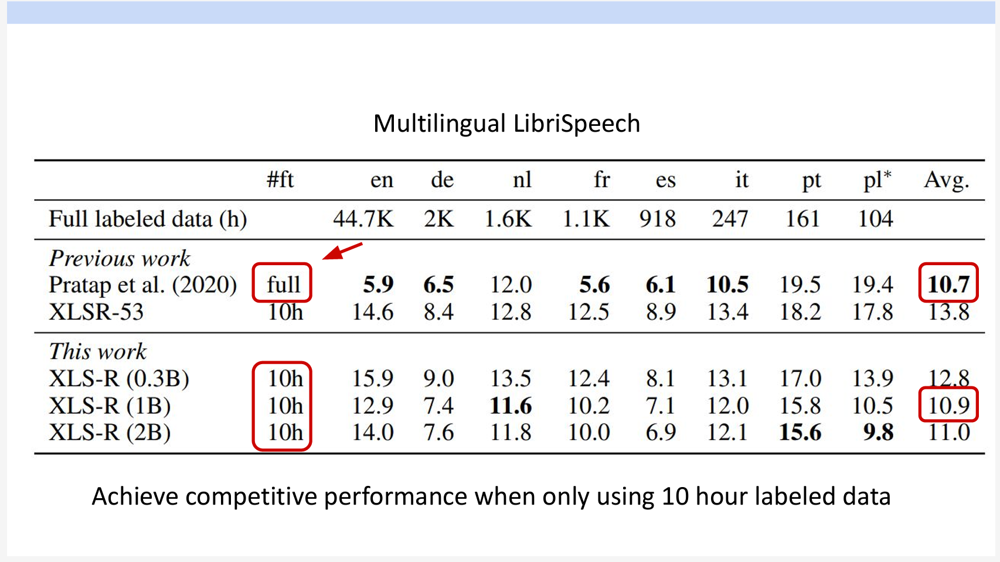

音声基礎モデルの紹介 Part1
本文の内容はYoutubeで音声認識に関する講義に基づいています。全体は3部分に分けられます。本文は音声表現学習に焦点を当て、対照学習モデルと予測モデルの両方について説明します。次のパートでは、音声大型言語モデルやその他の音声基礎モデルについて詳しく説明します。
- Speech Representation Learning(音声表現学習)
- Speech Large Lanuage Models(音声大型言語モデル)
- Other Speech Foundation Models(その他の音声基礎モデル)
資料のリンクはこちらです。

現在、音声処理の一般的な方法は2ステップです。まず、音声をSelf-supervised Learning Model(自己教師ありモデル)を通して、音声の特徴表現を抽出します。抽出した特徴表現を下流のモデルにインプットし、音声認識もしくは話者分離を行います。
Part1の内容としては、音声に関する自己教師ありモデルの紹介と抽出した特徴表現の評価です。

Part2では、SSLモデルの上に言語モデルを載せ、音声生成や、音声翻訳等の研究を紹介します。
Part3だと、大量なラベル付けデータで学習したWhisperとUSMを紹介します。
Part 1 Speech Representaion Learning
なぜ音声表現学習が必要ですか。
これまで各タスクには別々のモデルを作成していました。例えば、感情認識の場合は、そのための専用なデータを使用して個別のモデルを作ります。話者分離の場合も、それに専用のデータを使用して個別のモデルを作ります。
その欠点も明らかです。まず、ラベル付けのデータを作成するコストが高いです。そして、タスクごとにモデルを作成する必要があります。
音声表現学習は自然言語処理のBERTのようなモデルと同じです。たくさんのラベルなしの音声で音声の表現を学習し、その上で全結合層をつけて、ラベル付きのデータで個別のタスクをFine-Tuningします。
今回は、対照学習モデル（Contrastive models）と予測モデル（Predictive models）について紹介します。
対照学習とは
対照学習とは、同類のもの同士は近くに、異なるもの同士は遠くになるように特徴量を学習することです。具体的な例でいうと、図1と図2はどちらも猫の画像なので、図1から抽出するベクトルと図2から抽出するベクトルをなるべく近くにしたいです。一方、図3は犬の画像なので、図1と図3のベクトルをなるべく遠くにしたいです。そのような学習が対照学習です。
Contrastive Predictive Coding
まずはContrastive Predictive Coding(CPC)を紹介します。
16,000Hzでサンプリングされた音声に対して、まずCNNでDown samplingを行います。その結果をGRUを入力し、Context vectorをアウトプットします。
GRUは、ゲート付き回帰ユニットとも呼ばれるもので、LSTMの変化形のネットワークです。各ステップtに、前のステップt-1の結果と現在ステップtのインプットを受けて、アウトプットをします。
対照学習では、Positive例とNegative例が必要です。CPCにおいて、Positiveの例は未来の音声で、Negativeの例はほかの音声から抽出したものです。
得られたContext vectorを線形変換して各Pos/Negの例との類似度を計算して学習を行います。
その結果は素晴らしいです。音素の分類は、話している内容で分類することです。一方、話者の分類は内容ではなくて、音の性質に基づいて行われます。同じモデル上にLinearの層を追加しただけで、音素の分類と話者の分類の両方で、教師あり学習の結果に近い精度が得られます。
音素(Phone)は、特定の言語の音の最小単位で、それ自体は意味を持たず、他の音素と組み合わせることで単語を形成します。例えば、英語の単語 “cat” は三つの音素 /k/ /æ/ /t/ に分けることができます。
Phone classification（音素分類）とは音素に分割するプロセスを指します。

Wav2vec 2.0とXLS-R
wav2vec 2.0はMetaが2020年6月に出した論文です。Wav2vecの場合は、音声をCNNでDown samplingした後、得た特徴量が2つの部分にインプットされます。
- 下流のTransfomerのEncoder：ここでBERTと同じように一部のTokenがマスキングされます。また、各インプットのTokenに一つのアウトプットが出力されます。
- ベクトル量子化層：ここでインプットを離散的な音声符号に変換します。具体的には、各入力ベクトルをコードブック内の最も近い原型ベクトルにマッピングし、原型のインデックスに対応するワンホットベクトルを出力します。
順番がtのTransformerアウトプットのPositive例はtの特徴量を量子化したもの、Negative例は、ほかのTimestepの量子化したものです。
つまり、TransformerのアウトプットがなるべくそのTimestepの特徴量に似ているように学習が行われます。詳細は以下の動画をご覧ください。

XLS-RはWav2vec 2.0のアーキテクチャを使っています。Wav2vec 2.0との違いは対応する言語、データとモデルサイズです。
XLS-Rは、Wav2vec 2.0をベースにしていますが、多言語に対応しています。XLS-Rは128言語の音声データで学習されており、Wav2vec 2.0よりも多くの言語をサポートしています。
XLS-Rは、Wav2vec 2.0よりも大規模なモデルです。XLS-Rは最大20億パラメータを持ち、約50万時間の音声データで学習されています。Wav2vec 2.0は約3億パラメータで、約3万時間の音声データで学習されています。
結果を見ると、モデルサイズが同じ場合は、データの種類が多いXLS-Rの精度が逆に下がりました。モデルが小さい場合は、データのバリエーションが多すぎることも必ずしも良いものではないことがわかります。
多言語対応について、たったの10時間のラベリングデータで以前のモデルが全量のデータでFine-Tuning結果と同じレベルのエラー率になります。

HuBERT
つぎにPredictive modelの紹介をします。
Predictive modelはPseudo Labelingで学習しています。まず、ラベルなしのデータに対してクラスリングでラベルを付けます。そのラベルを用いて学習を行います。
HuBERTの名前の中にBERTがあります。その構造もBERTと似ています。音声がインプットされると、Down samplingされてTransformerに入れられます。入力する際に、一部の特徴量がマスキングされます。マスキングされるところのTokenを予測することでモデルが学習しています。
自然言語の各単語が離散なものなので、それをTokenに変換することができます。音声の場合は、Codebookというものを作る必要があります。作り方はWav2vec 2.0のラベル付け方法と似ています。スライドの右のように、音声をMFCCで特徴量を抽出し、K-meansで複数のカテゴリをします。そのカテゴリの集合はCodebookで、一つずつのカテゴリはTokenになります。
MFCC（Mel Frequency Cepstral Coefficients）は、音声信号の特徴を抽出するために使用される一連の特徴量です。音声認識や音楽情報検索、音声分析などの分野で広く使用されています。MFCCは、音声信号をメル尺度（人間の聴覚に近い周波数スケール）にマッピングし、さらにケプストラム分析を適用して、音声信号のスペクトル情報を圧縮した形で表現します。これにより、音声の特徴を効果的かつ簡潔に捉えることができます。
まずこの手法で400,000ステップ学習し、HuBERT-1を学習します。次にHuBERT-1をMFCCの代わりに使用し、Codebookを作成して同様の学習を行い、HuBERT-2を得ます。HuBERT-2は最終モデルです。
WavLM
WavLMの構造はHuBERTとまったく同じですが、異なる点は2つあります。まず、WavLMのCodebookはMFCCではなく、直接HuBERTを使いました。また、音声をインプットする際に直接インプットするのではなく、2つの音声を重ねてインプットしました。つまり、モデルは予測の中でノイズ除去のこともしています。
その結果、WavLMの精度がHuBERTより高くなっています。
BEST-RQ
BERT-RQとPredictive modelと異なる点はCodebookの生成方法です。BERT-RQはまず投影層をランダムに初期化し、それを固定します。インプットデータにその投影層を追加してCodebookのTokenを直接出力しています。
面白いことに、この方法で学習したモデルはほかのモデルと同じような結果が得られます。つまり、Codebookが固定されたものであれば、完全にランダムでもモデルの学習ができるのます。
SUPERB Benchmark
SUPERB benchmarkとは、音声処理のための汎用的な共有表現の能力を評価するためのベンチマークリソースの集合です。
各タスクについて、学習データと下流のモデルを固定し、上流のモデルの特徴抽出能力を評価することができます。
また、SUPERBを通じて、どのタスクにどのレイヤーを使ったほうが良いかもわかります。具体的には、学習時に各レイヤーを加重平均して下流のモデルに送ります。層のウェイトは固定ではなく、学習するパラメーターです。それで、重要な層のウェイトが最終的に高くなります。
具体的なタスクは主に4つのカテゴリに分けることができます。
ベンチマークからわかることとしては、モデルが大きいほど性能が良いことです。
また、強いモデルはすべての領域において良い性能を持っています。(自然言語処理の傾向と似ていますね)
右の図の縦はタスク、横はレイヤーのウェイトです。自然言語処理と同じように、話者分離など音に関するタスクは低いレイヤーのウェイトが重いです。意味を解析する音声認識などのタスクだと高いレイヤーのウェイトが重いです。
Part 1 まとめ
Part1では、対照学習モデルと予測モデルの両方を紹介し、それぞれについて3つのモデルが取り上げられています。各モデルの特徴は以下のスライドに示されています。
また、音声表現学習のベンチマークであるSUPERBも紹介しました。SUPERBのベンチマークから2点がわかりました。
- 大きなモデルはなんでもできること
- 違うタスクで使う層がそれぞれ違うこと